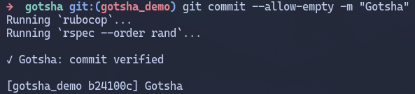
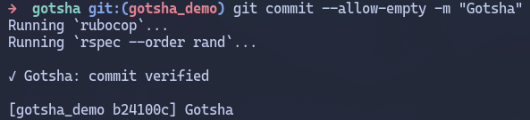
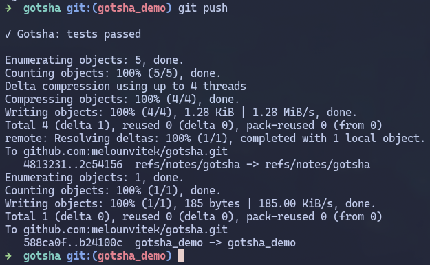
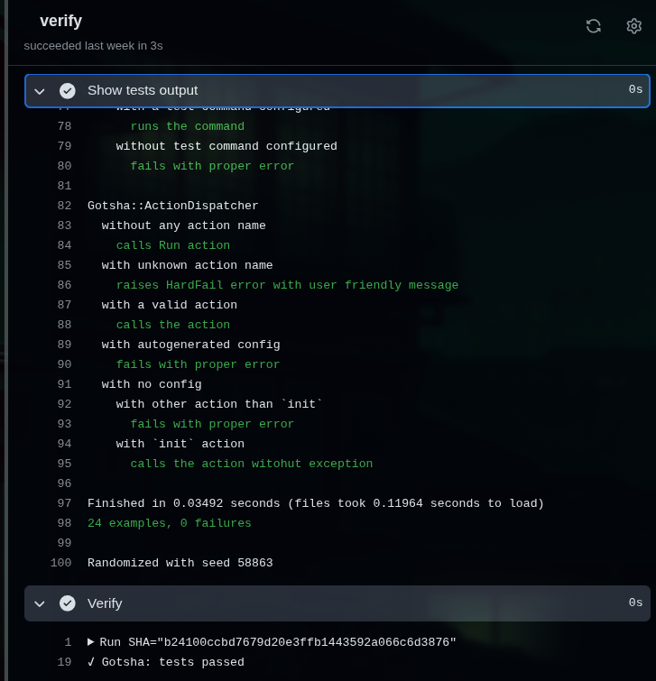

1) Runs locally
Gotsha runs the project test suite on your machine. This can happen automatically (for every Git commit or push), or manually; right before you ask for review. You can easily configure it whatever way suits your project best.
Run tests & linters on your machine, store complete results, and let your PR show your tests output and status. Quickly and automatically.
Set it up by following commands:
gem install gotsha # or add `gem "gotsha"` to you Gemfile
gotsha init
gotsha configure # this will open the config file; it's short and very important, so please, read it :-)
Gotsha will guide you through the setup — it won't take more than 3 minutes. If you still got stuck somewhere, you can always use gotsha help.
Gotsha runs the project test suite on your machine. This can happen automatically (for every Git commit or push), or manually; right before you ask for review. You can easily configure it whatever way suits your project best.
Test results from every run are attached as Git notes for the recent commit SHA. (Got-SHA... you get it, right?)
Push as usual — the note follows your commit, and tiny CI script instantly verifies it and makes the tests result visible to reviewers.  